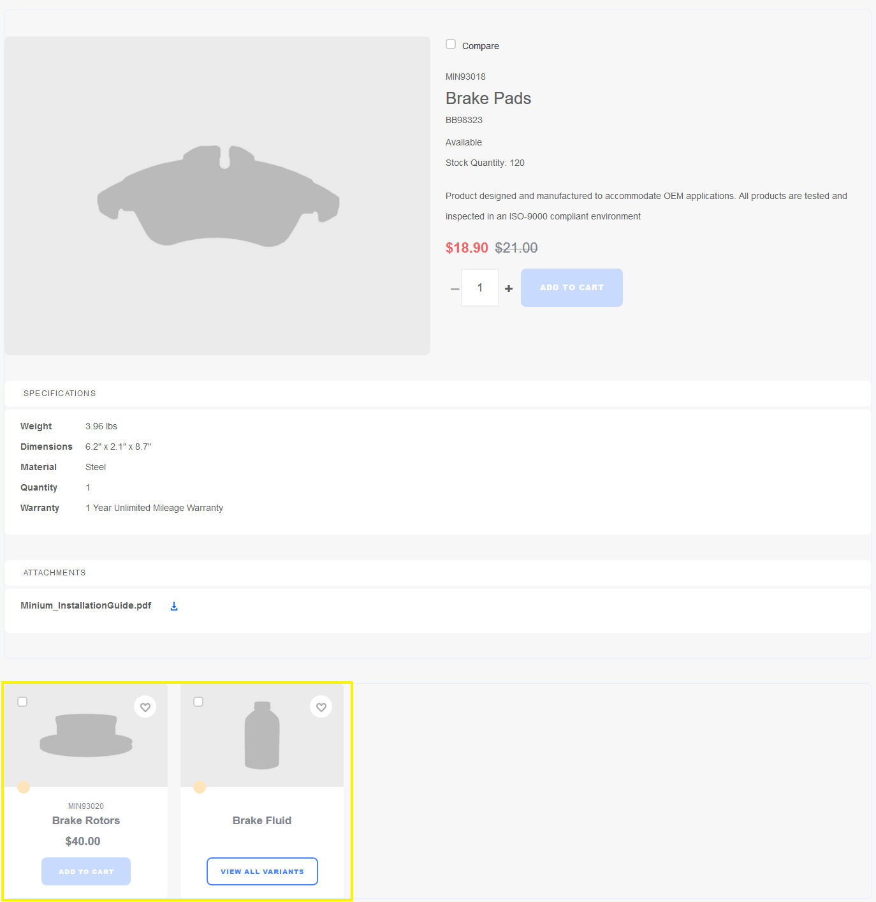
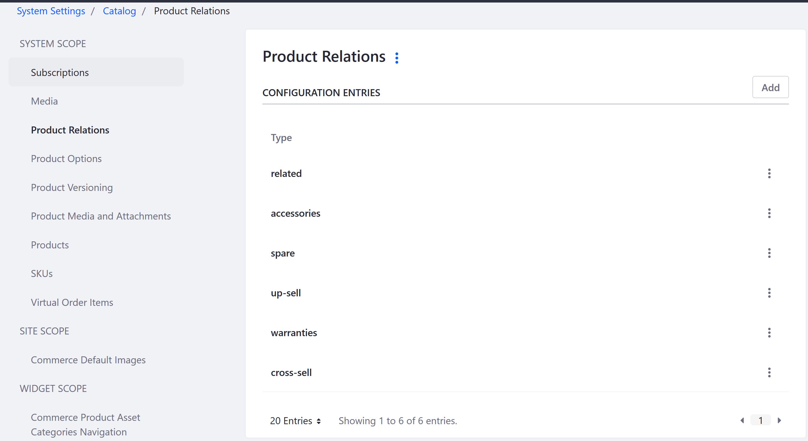
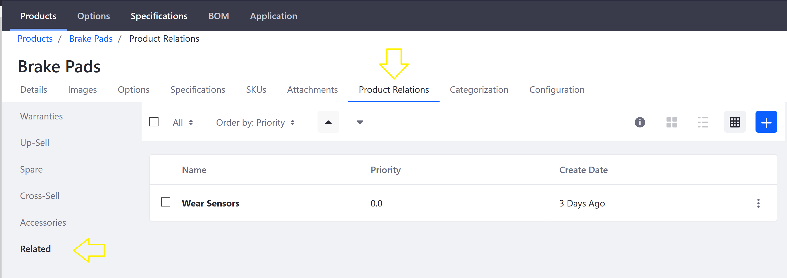
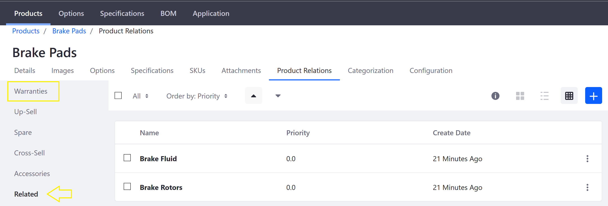
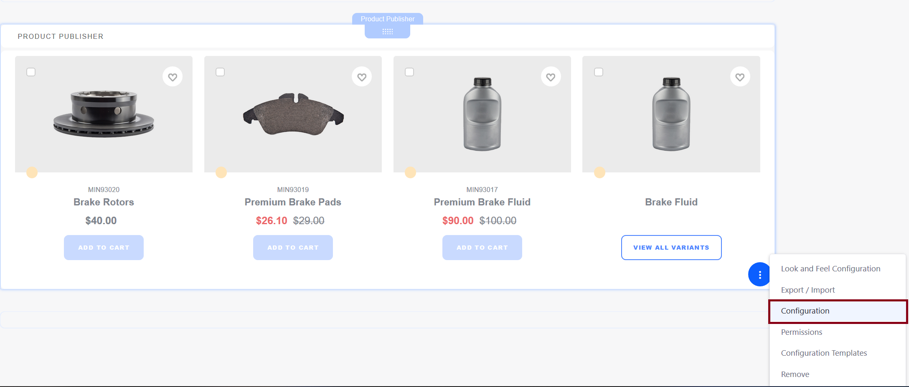
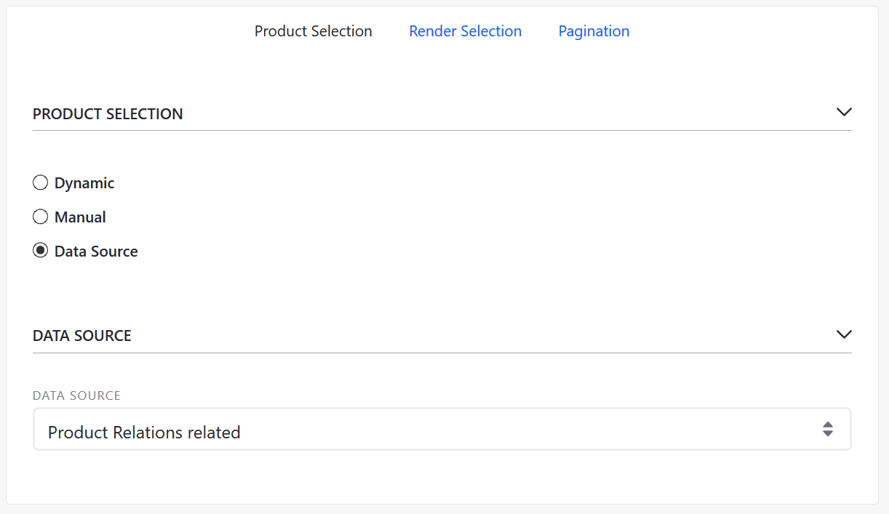

Related Products, Up-Sells, and Cross-Sells¶
Product relations can be used to connect products. Once connected, a product displays the links to other products. Every related product must be assigned to a Product Relation Type. These products can then be displayed by a Product Publisher widget configured to source data from the appropriate type.
When more than one Product Publisher widget is placed on a product detail page, multiple sets of related products may be shown. For instance, one widget might display a set of products that are alternatives to the product featured on the page, while another might display products that are accessories to the featured product.
Note: If your site was built using an accelerator, then a number of product relation types are already in place. Here is a list of default Product Relations:
- Up-Sell: Display products that are comparable to the featured product but have a higher sale value.
- Spare: Display products that are spare parts or components for the featured product.
- Related: A catch-all set.
- Accessories: Display add-on products for use in conjunction with the featured products.
- Cross-Sell: Display products complementary to the featured product.

In the image above, the two related products are displayed in the Product Publisher widget at the bottom. You have the option to add more Product Publisher widgets configured with other types of Product Relations.
Adding a New Product Relation Type¶
More Product Relation types may be added as necessary. This includes intangibles such as warranties. To add a new Product Relation:
Navigate to the Control Panel → Configuration → System Settings.
Click Catalog in the Commerce section.
Click Product Relations on the left menu.
Click the Add button.
Enter the new Product Relation in the Type field: Warranties.
Click Save.

The new Product Relation Type has been added.
Creating Relationships Between Products¶
Navigate to the Control Panel → Commerce → Products.
Select any product; for example, Brake Pads.
Click on the Product Relations sub-tab.
Click on Related in the left menu.

Click the (+) button to add one or more relationships. In this example, select Brake Rotors and Brake Fluid.
Click Add.

These two products are now associated with Brake Pads. Note that this relationship is unidirectional; in other words, when viewing Brake Pads the new product relations will be visible but when viewing the Brake Rotors or Brake Fluid products, Brake Pads will not be listed as as a related product.
Once the product relationships have been created, configure the Product Publisher widget to display the relations.
Displaying Product Relations¶
You can display product relations on a product display page by configuring a Product Publisher widget. You must have a product display page in place first.
Search for a product (for example Brake Pads).
Click Brake Pads to view the Product Details.
Scroll to the bottom of the page to view the related products listed in the Product Publisher widget.

Click the 3-dot icon (Options) → Configuration.
Select Product Relations related from the Data Source dropdown menu.

Click Save and close the dialog box.
The example above shows how different products could be related, ensuring that customers can see the full range of products that may also be potentially useful.